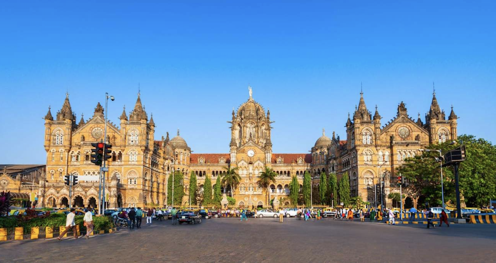

A CITY YOU CAN HEAR
Mumbai, in motion.
Experience my hometown through four sounds: morning traffic, a local train, monsoon rain, and the waves along Marine Drive.
4 SCENES | 76 SECONDS | MUMBAI, INDIA

CHAPTER 01 / 04
The city wakes
Morning traffic and car horns bring the city streets to life.
Listen to Mumbai
Press Play or choose a scene below to begin.
Ready to listen.
FOUR MOMENTS, ONE CITY
Choose a scene
Each scene starts at a different point in the same audio recording.
The sounds of home
Mumbai is always moving. I wanted to show the contrast between its busy streets and train stations, its rainy season, and the calmer feeling of standing beside the Arabian Sea at Marine Drive, also known as the Queen's Necklace. The sounds change as the images tell the story of a day in the city.